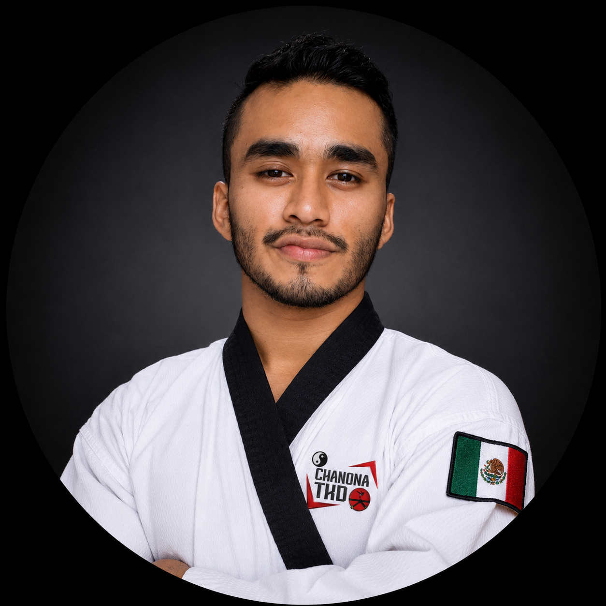

Tu entrenamiento se organiza de acuerdo con tus objetivos.
PERSONALIZA TU PROCESO
Entrena con un plan hecho para ti.
Si necesitas sesiones, atención y correcciones individuales, elige entre tres entrenamientos personalizados con un plan adaptado a tus objetivos.

Entrenamiento individual con los maestros Bryan Herrera Chanona y José.
ENTRENAMIENTO PERSONALIZADO
Un plan individual y correcciones para tus objetivos.
Las tres opciones son entrenamientos personalizados, no clases grupales.
Recibes atención directa sobre tu ejecución durante las sesiones.
Una o dos sesiones por semana, según el programa elegido.
Las sesiones las imparten los maestros Bryan Herrera Chanona y José. La asignación se acuerda contigo; no están ambos en cada sesión.
EXPERIENCIA DE ENSEÑANZA
¿Qué detalle de tu técnica te está frenando?
No todos necesitamos las mismas correcciones. Explora flexibilidad, pateo o Poomsae y conoce cómo observo un movimiento para identificar qué necesita mejorar. Las tres clases son una muestra de enseñanza; puedes consultar el programa sin terminarlas.
Clase 1 de 3FlexibilidadCLASE GRATUITA
ELIGE TU PROCESO PERSONALIZADO
Tres opciones con atención individual.
En cualquiera de los tres programas recibes un plan individual y correcciones directas durante tus sesiones con los maestros Bryan Herrera Chanona y José. El profesor asignado y los horarios se acuerdan contigo.
Forjando Bases 1 ofrece una sesión semanal; Forjando Bases 2 y Avanzado de Campeones ofrecen dos sesiones semanales.
La diferencia adicional de Avanzado de Campeones frente a Forjando Bases 2 es el acceso a toda la Academia Digital mientras la mensualidad esté activa. Las tres clases nuevas semanales de System no forman parte de los programas Forjando Bases.
Por ejemplo, puedes trabajar una dificultad específica de pateo o un detalle de Poomsae en tus sesiones y continuar practicando con tu plan individual.
La inscripción y los horarios están sujetos a disponibilidad.
Forjando Bases 1
Plan de entrenamiento individual, una sesión semanal y correcciones individuales.
Mensualidad$1,400 MXN$99 USD · €89 EUR / mes
Consultar Forjando Bases 1Forjando Bases 2
Plan de entrenamiento individual, dos sesiones semanales y correcciones individuales.
Mensualidad$1,800 MXN$129 USD · €119 EUR / mes
Consultar Forjando Bases 2Avanzado de Campeones
Plan de entrenamiento individual, dos sesiones semanales y acceso a toda la Academia Digital mientras la mensualidad esté activa.
Mensualidad$2,600 MXN$164.24 USD · €145.02 EUR / mes
Consultar Avanzado de CampeonesPreguntas frecuentes
¿Son clases grupales o entrenamientos personalizados?
Son entrenamientos personalizados. Los tres incluyen un plan individual, sesiones semanales y correcciones directas.
¿Quién impartirá mis sesiones?
Los maestros Bryan Herrera Chanona y José participan en la enseñanza en línea. La asignación se acuerda con cada alumno, por lo que no significa que ambos estén presentes en cada sesión.
¿Qué cambia entre Forjando Bases 1 y 2?
Forjando Bases 1 incluye una sesión semanal; Forjando Bases 2 incluye dos. Ambos tienen plan individual y atención personalizada.
¿Cuál es la diferencia entre Forjando Bases 2 y Avanzado de Campeones?
Ambos incluyen plan individual y dos sesiones semanales. Avanzado de Campeones añade acceso a toda la Academia Digital mientras la mensualidad permanezca activa.
¿Incluyen las tres clases nuevas semanales de System?
No. Los entrenamientos personalizados son una oferta distinta de la membresía System. Forjando Bases 1 y 2 incluyen un plan individual y sus sesiones, no las tres clases semanales de System.
¿El acceso a Academia de Avanzado de Campeones es de por vida?
No, dentro de este programa dura mientras esté activa la mensualidad. La compra independiente de Academia Digital sí ofrece acceso de por vida.
Elige el seguimiento que necesitas.
Cuéntame qué quieres corregir y te orientaré sobre los tres entrenamientos y su disponibilidad.
Consultar entrenamientos personalizadosOTRAS FORMAS DE COMENZAR